Every figure produced by the project, with an explanation. Numbers behind them: python scripts/show_results.py.
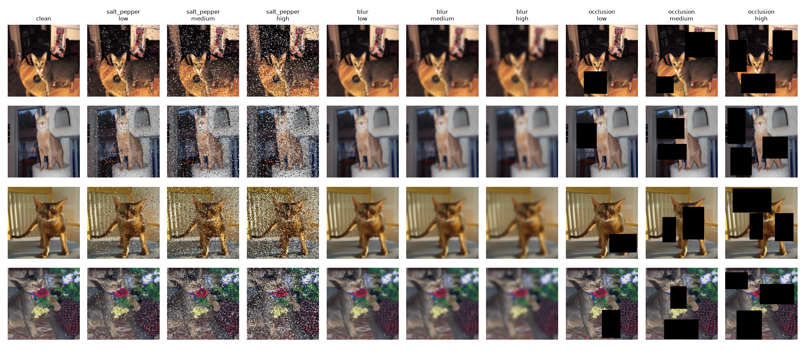
report/figures/corruption_preview.png
What it shows: Four test images (rows), each shown clean and then with salt-and-pepper noise, blur and occlusion at low, medium and high severity.
How to read it: Read each row left to right: the damage gets stronger within each group of three.
What it means: These are the exact fixed corruptions of the test manifest, so every model is judged on the same damage.
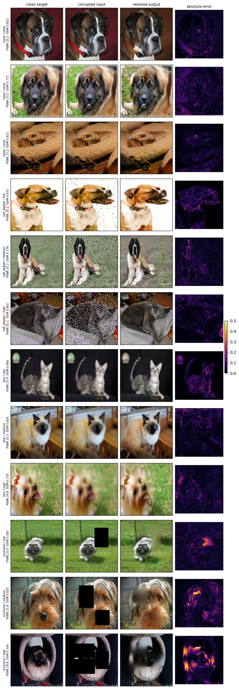
report/figures/task1_udae_examples.png
What it shows: Columns: clean target, corrupted input, restored output, absolute error map. One typical image per condition and severity.
How to read it: On the error map, black means no error and bright yellow means a large error (fixed scale 0 to 0.5).
What it means: Noise and blur are repaired with diffuse small errors on edges and fur. Occlusion boxes are filled with plausible colour blends, so the error concentrates in the box.
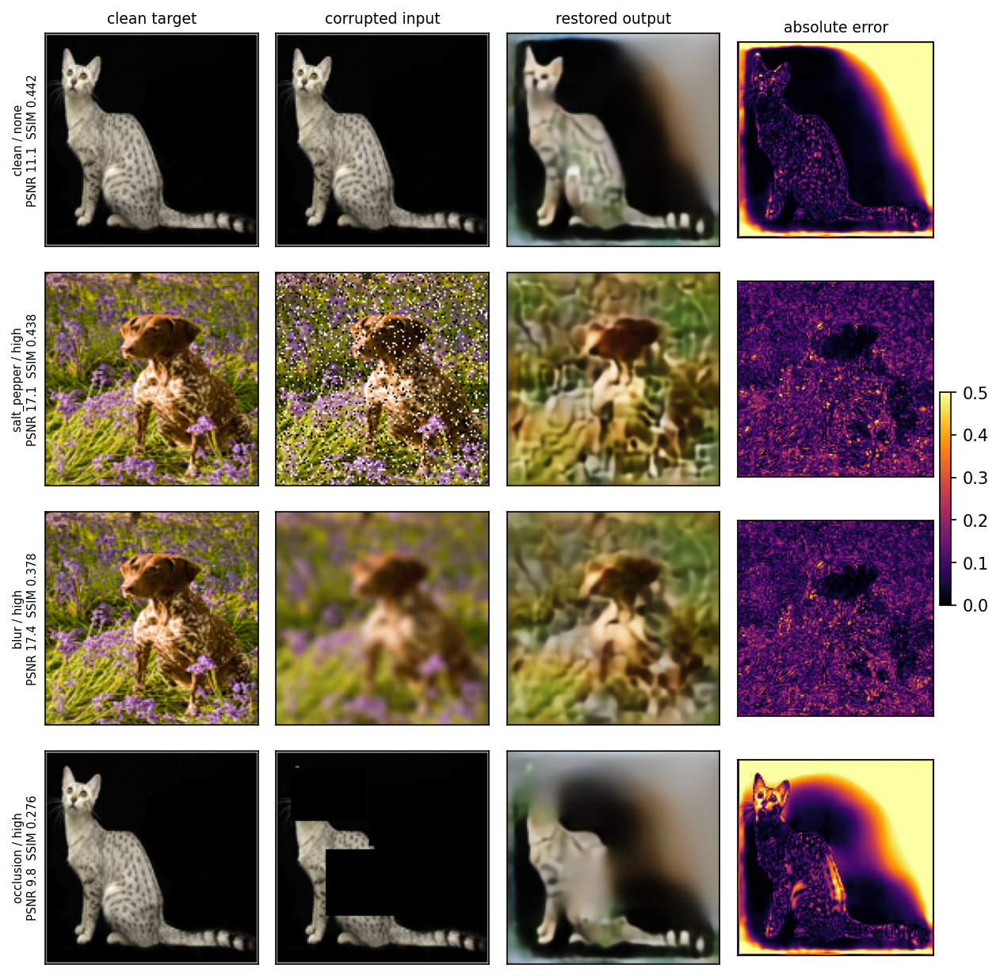
report/figures/task1_udae_failures.png
What it shows: The lowest-SSIM test image of each condition.
How to read it: Same columns as above.
What it means: The cat on a black background is 'repaired' even when clean, because black areas look like occlusion masks to a network that is not told the corruption. The flower-field dog shows dense texture that cannot pass the bottleneck. This failure motivates Task 2.
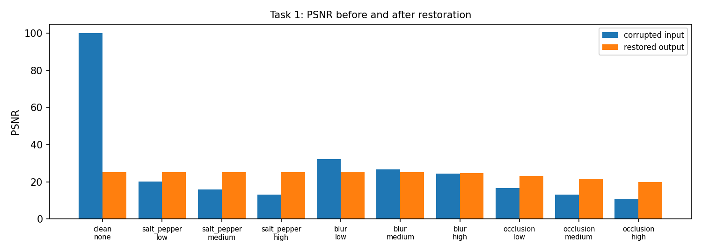
report/figures/task1_udae_psnr_bars.png
What it shows: For each condition and severity: PSNR of the damaged input (blue) and of the restored output (orange).
How to read it: Orange above blue means the model helped. Higher is better.
What it means: Strong damage improves a lot (noise, high occlusion). Clean and mild blur get worse: the output is capped near 25 dB by the bottleneck.
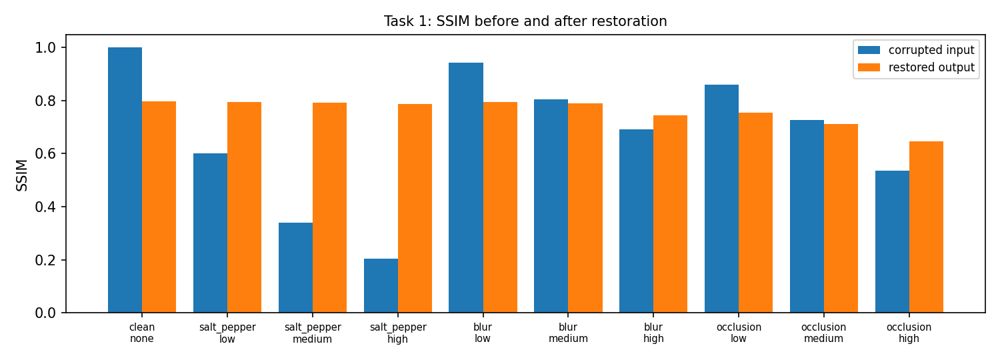
report/figures/task1_udae_ssim_bars.png
What it shows: Same as the previous bars, using SSIM (0 to 1).
How to read it: Higher is better.
What it means: Same story as PSNR; for low occlusion the SSIM is slightly lower than the input because the model softens the whole image.
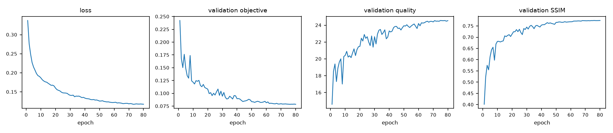
report/figures/task1_udae_curves.png
What it shows: Training loss, validation objective, validation PSNR and validation SSIM per epoch (80 epochs).
How to read it: The first two should fall, the last two should rise.
What it means: Steady convergence, no overfitting (validation keeps improving with training), smoother as the learning rate decays.
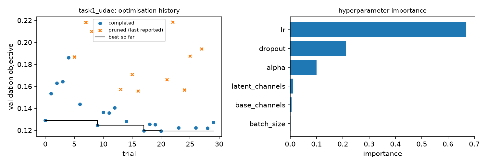
report/figures/task1_udae_optuna.png
What it shows: Left: the score of every trial (crosses are trials stopped early) and the best so far. Right: which hyperparameters mattered.
How to read it: Lower is better on the left. Longer bars on the right mean more influence.
What it means: 30 trials, 19 completed, 11 pruned. The learning rate mattered most (0.67), then dropout and alpha.
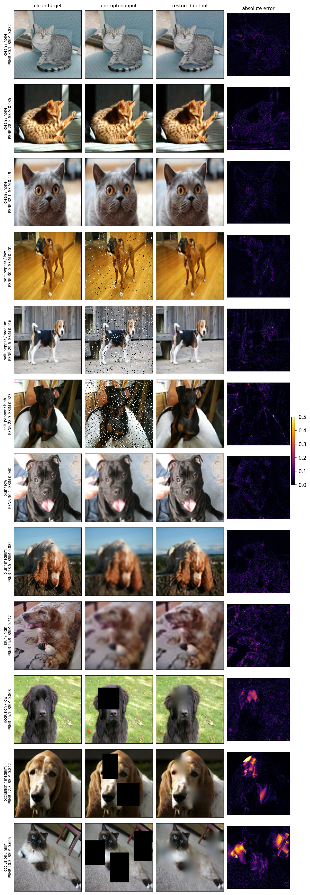
report/figures/task1_udae_skip_examples.png
What it shows: The same twelve examples for the model with one 16x16 skip connection.
How to read it: Compare with the no-skip examples: look at fur and edges.
What it means: Sharper outputs. The skip lets detail bypass the bottleneck, which is why we investigated it, and why we keep the skip-free model for the 'genuine bottleneck' requirement.
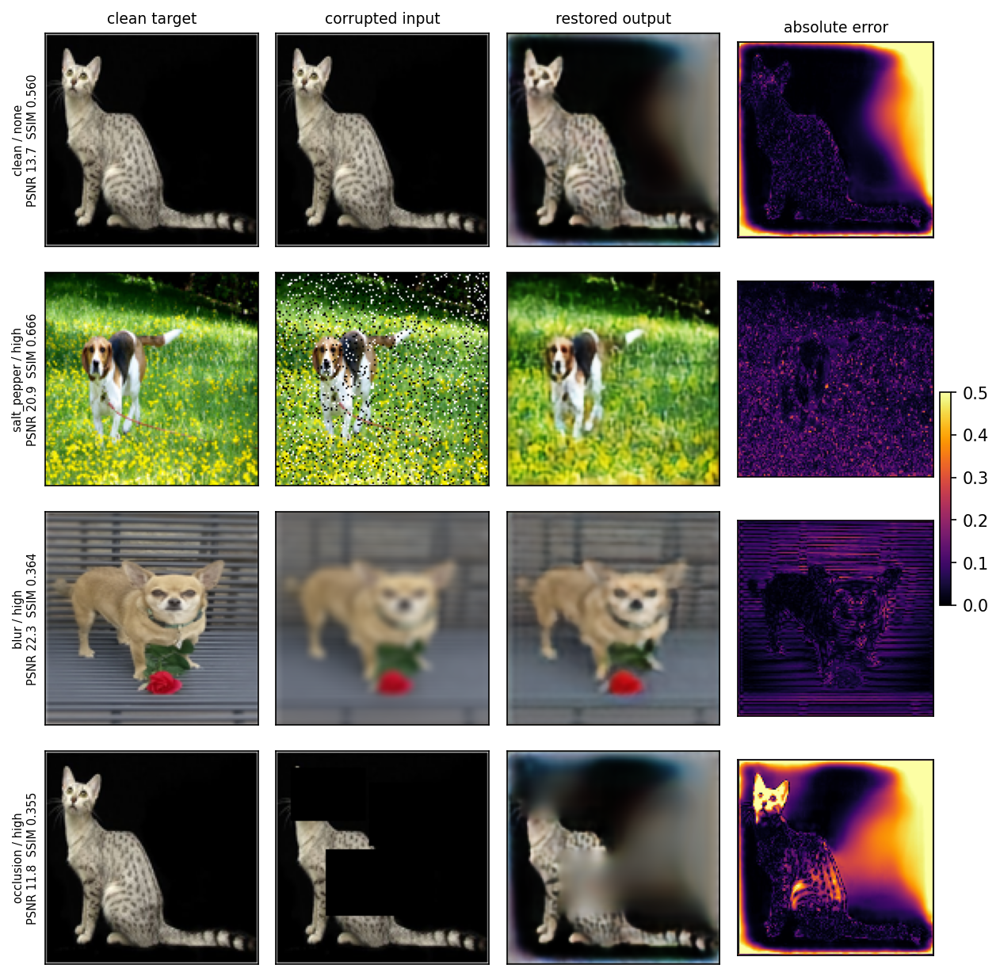
report/figures/task1_udae_skip_failures.png
What it shows: Worst cases of the skip model.
How to read it: As above.
What it means: The black-background problem persists, so it is not only a bottleneck effect.
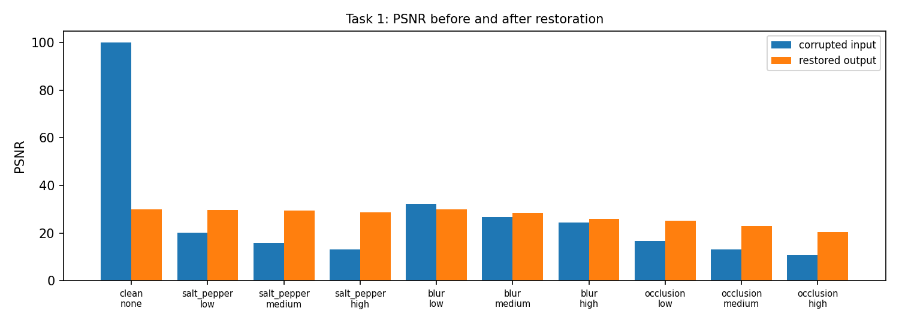
report/figures/task1_udae_skip_psnr_bars.png
What it shows: Before/after PSNR for the skip model.
How to read it: As above.
What it means: Higher orange bars than the no-skip model for every condition.
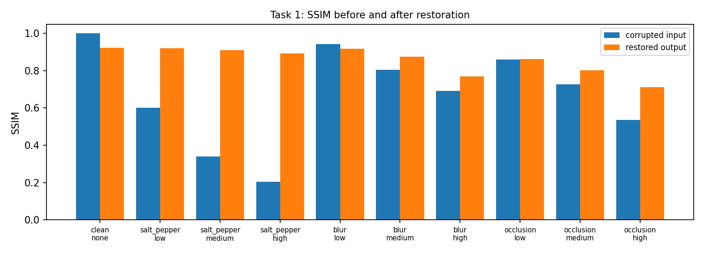
report/figures/task1_udae_skip_ssim_bars.png
What it shows: Before/after SSIM for the skip model.
How to read it: As above.
What it means: Higher than without the skip.
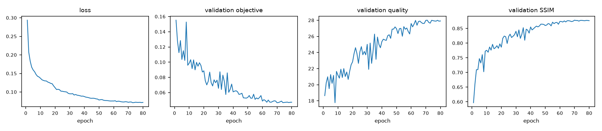
report/figures/task1_udae_skip_curves.png
What it shows: Curves of the skip model's final run.
How to read it: As above.
What it means: Converges like the main model, to a better level.
report/figures/task2_test_confusion.png
What it shows: Rows are the true condition, columns the classifier's answer; each row sums to 1.
How to read it: A perfect classifier is a bright diagonal with zeros elsewhere.
What it means: Almost perfect. The small off-diagonal numbers are low occlusion called clean and clean called blur or occlusion.
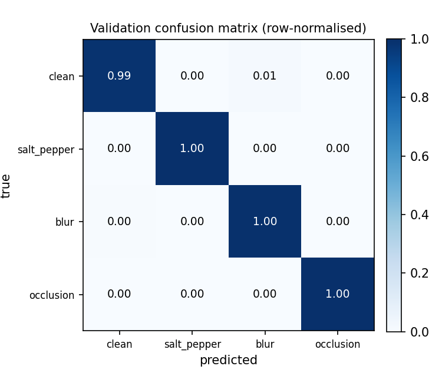
report/figures/task2_classifier_val_confusion.png
What it shows: Same matrix on the validation set, for the epoch that was kept.
How to read it: As above.
What it means: Used for choosing the checkpoint; it agrees with the test result, so the model generalises.
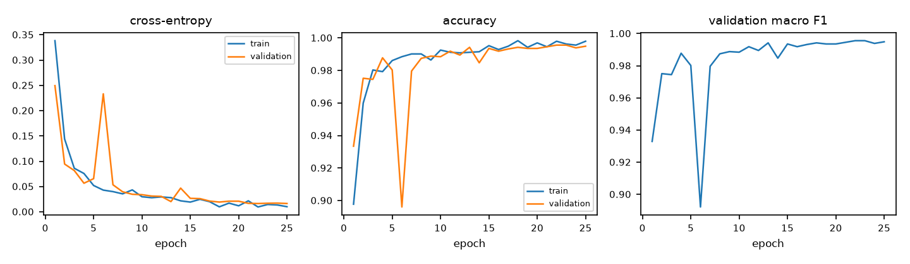
report/figures/task2_classifier_curves.png
What it shows: Cross-entropy, accuracy (training and validation) and validation macro-F1 per epoch.
How to read it: Loss falls; accuracy and F1 rise towards 1.
What it means: Converges within about 10 epochs; training and validation stay close, so no overfitting. One early dip (epoch 6) while the learning rate was high.
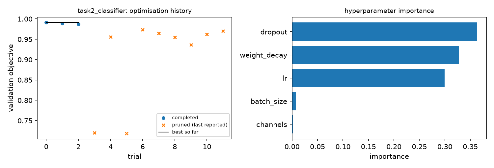
report/figures/task2_classifier_optuna.png
What it shows: Trial scores (validation macro-F1) and hyperparameter importances.
How to read it: Higher is better here.
What it means: 12 trials, 3 completed, 9 pruned. Dropout, weight decay and learning rate matter; the network size hardly does (the small preset won).
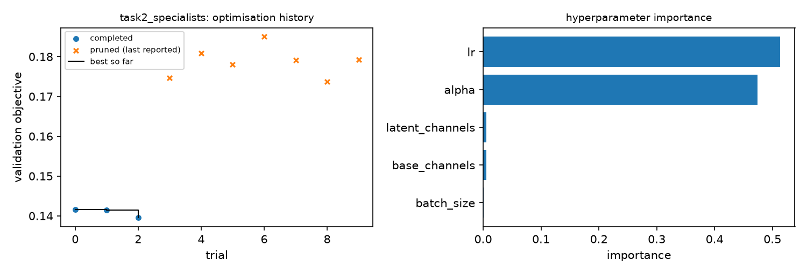
report/figures/task2_specialists_optuna.png
What it shows: Trial scores (mean objective of the three specialists) and importances.
How to read it: Lower is better.
What it means: 10 trials, 3 completed, 7 pruned. Learning rate and the L1/SSIM weight dominate.
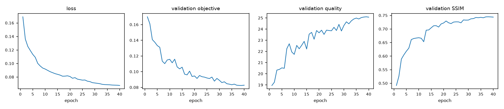
report/figures/task2_specialist_salt_pepper_curves.png
What it shows: Training curves of this specialist.
How to read it: Loss falls, quality rises.
What it means: Trained only on noisy images.
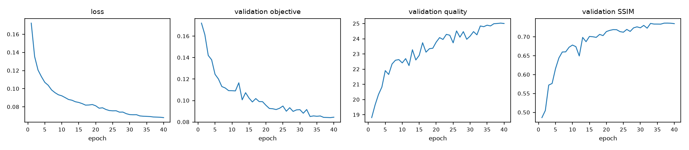
report/figures/task2_specialist_blur_curves.png
What it shows: Training curves of this specialist.
How to read it: As above.
What it means: Trained only on blurred images.
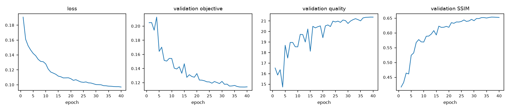
report/figures/task2_specialist_occlusion_curves.png
What it shows: Training curves of this specialist.
How to read it: As above.
What it means: Trained only on images with black boxes.
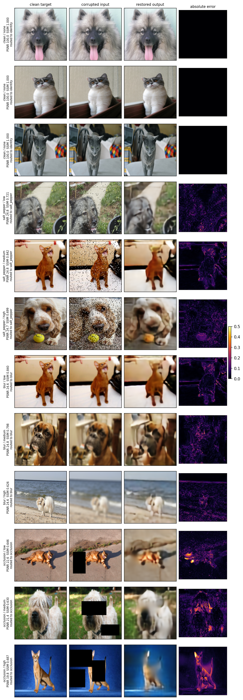
report/figures/task2_examples.png
What it shows: Clean target, corrupted input, restored output and error map; the row label names the expert chosen.
How to read it: Check that each corruption goes to its own expert and clean images are untouched.
What it means: Hard routing works: the right expert is picked and clean images pass through unchanged.
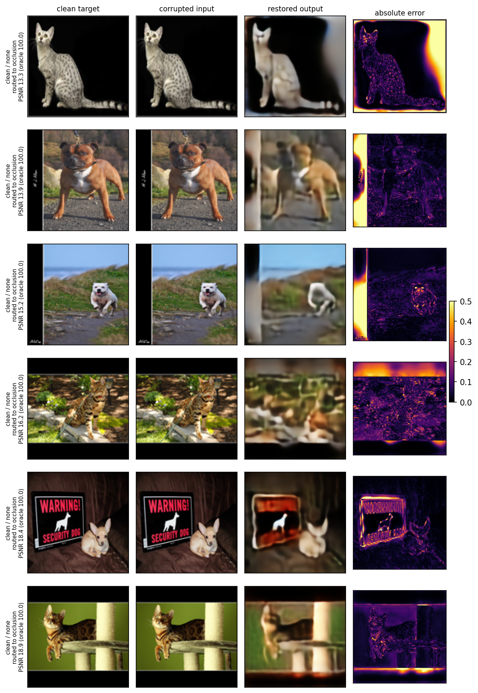
report/figures/task2_misrouted.png
What it shows: Images sent to the wrong branch, with the biggest quality loss compared with oracle routing.
How to read it: Row label: true class, branch chosen, PSNR (and the PSNR it would have had).
What it means: All are clean photos with large black areas (black background, black borders). The classifier reads them as occlusion and the occlusion expert paints over them.
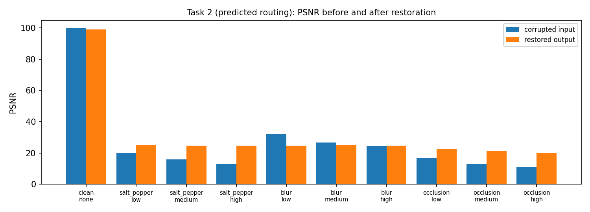
report/figures/task2_predicted_psnr_bars.png
What it shows: PSNR of input and output for every condition and severity under the real (predicted) routing.
How to read it: Orange above blue means it helped.
What it means: Almost identical to oracle routing; clean images are intact.
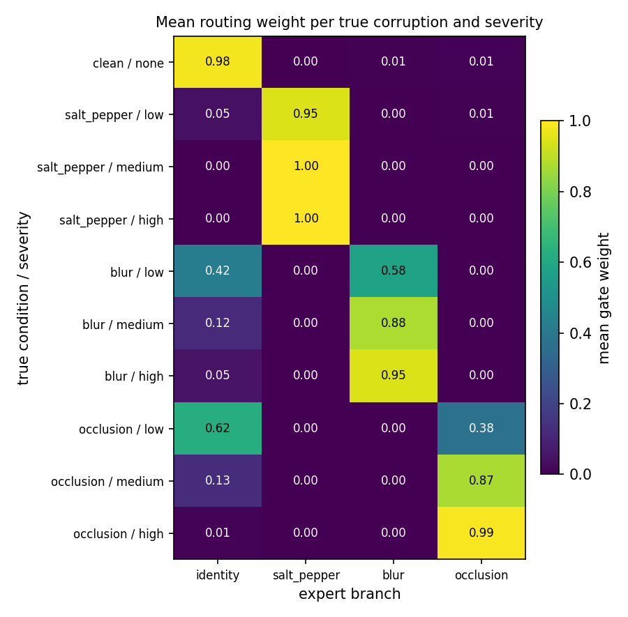
report/figures/task3_moe_routing_heatmap.png
What it shows: Average weight given to each of the four branches (columns) for each true corruption and severity (rows).
How to read it: Brighter means more weight. A bright diagonal means the gate sends each corruption to its own expert.
What it means: Each corruption goes to its own expert and the routing sharpens as severity grows. For mild damage the leftover weight goes to the identity branch, never to a wrong expert.
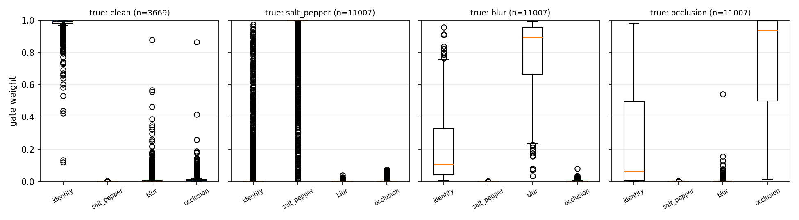
report/figures/task3_moe_weight_distribution.png
What it shows: Box plots of the four branch weights for each true corruption.
How to read it: The box is the middle half of the images; the line inside is the median; dots are outliers.
What it means: Shows the spread across individual images, not just the average: sharing is image-by-image, not a constant split.
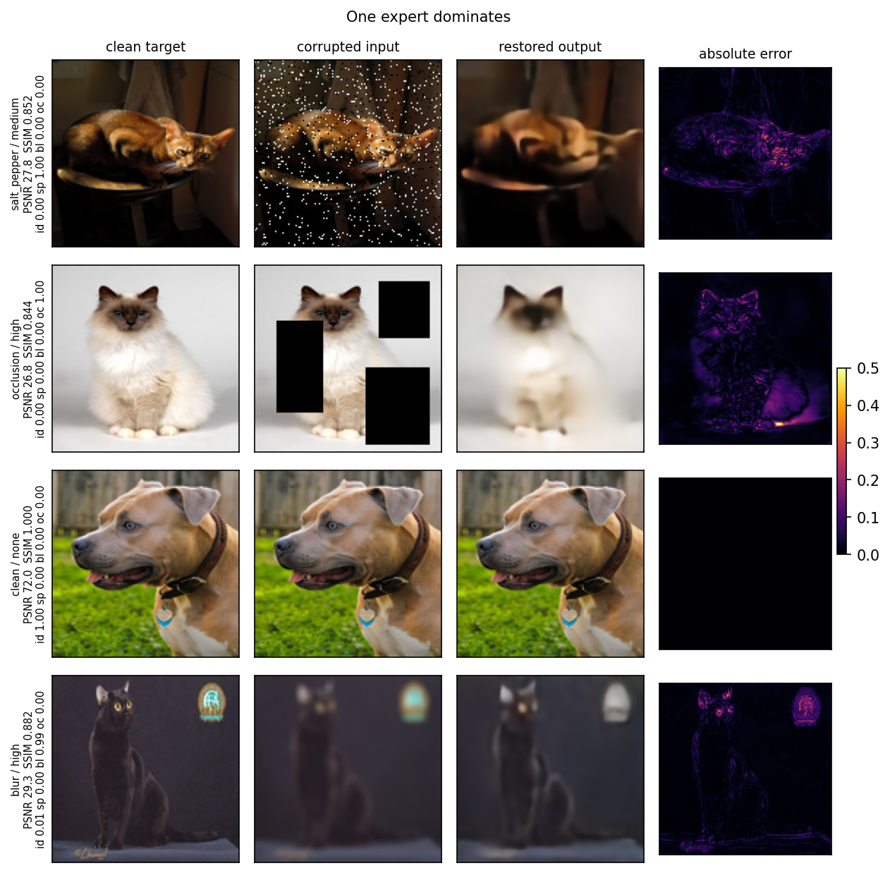
report/figures/task3_moe_dominant_examples.png
What it shows: Four images where the gate is very sure; row labels give the four weights (id, sp, bl, oc).
How to read it: A weight near 1.00 means that branch alone does the work.
What it means: Strong corruptions get a single expert.
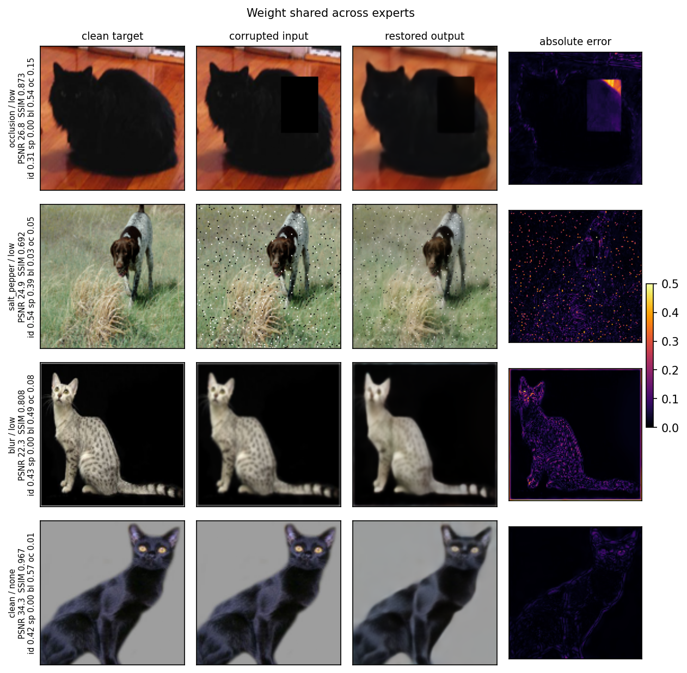
report/figures/task3_moe_distributed_examples.png
What it shows: Four images with the most evenly spread weights.
How to read it: Look at the weights in the row labels.
What it means: Mild or ambiguous cases (a low occlusion on a black cat, light noise on grass) share weight, and mixing keeps their detail.
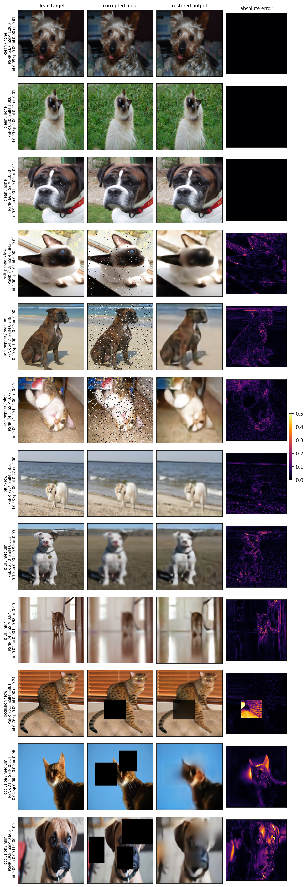
report/figures/task3_moe_examples.png
What it shows: Clean, corrupted, restored, error map with the weights.
How to read it: As in Task 1.
What it means: The soft mixture's typical behaviour across all conditions.
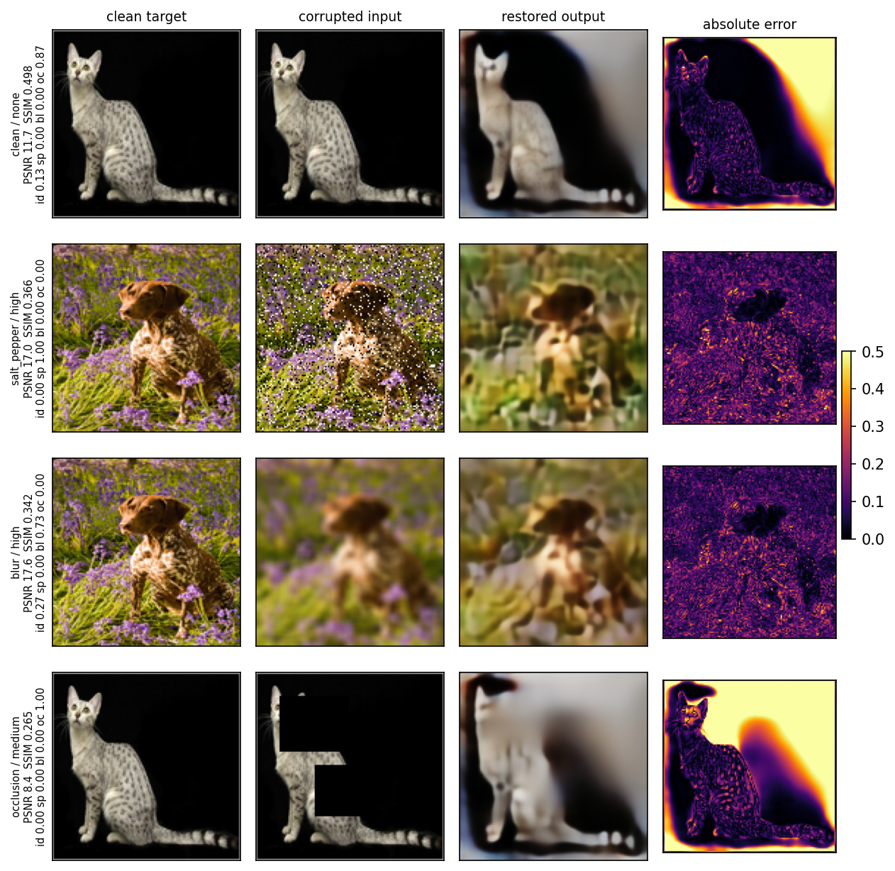
report/figures/task3_moe_failures.png
What it shows: The worst image of each condition, with the weights in the row labels.
How to read it: Compare the weights with the true corruption.
What it means: Separates routing errors (clean cat sent 0.87 to the occlusion expert) from expert errors (correct routing, but the expert cannot recover the content).
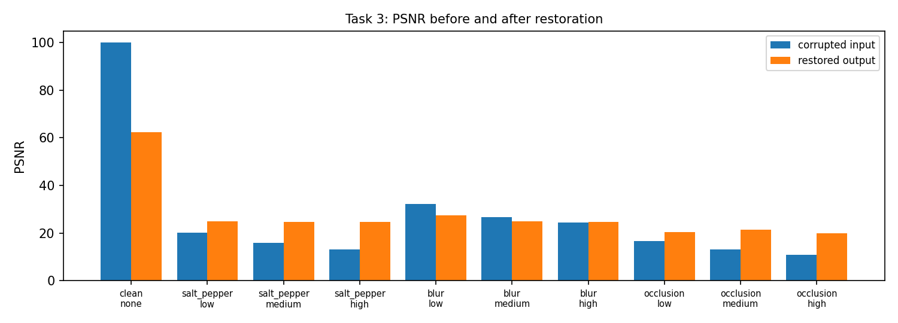
report/figures/task3_moe_psnr_bars.png
What it shows: PSNR of input and output per condition and severity.
How to read it: Orange above blue means it helped.
What it means: Best of the three systems on mild corruptions, and clean images stay almost intact.
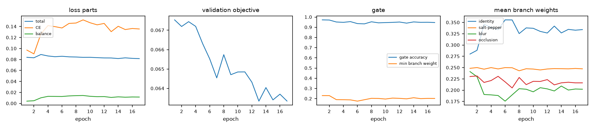
report/figures/task3_moe_curves.png
What it shows: Loss parts, validation objective, gate accuracy and the mean weight of each branch per epoch (epochs 1-2 warm-up, then joint fine-tuning).
How to read it: Mean branch weights should stay away from 0 (no collapse).
What it means: The objective falls through fine-tuning; no branch collapses; the identity weight rises as the gate learns to hedge.
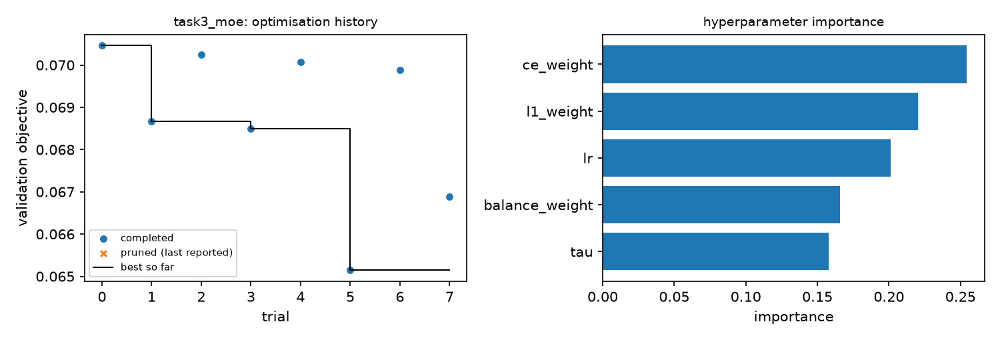
report/figures/task3_moe_optuna.png
What it shows: Trial scores and importances.
How to read it: Lower is better.
What it means: 8 trials, all completed, none pruned for collapse; importances are spread evenly.
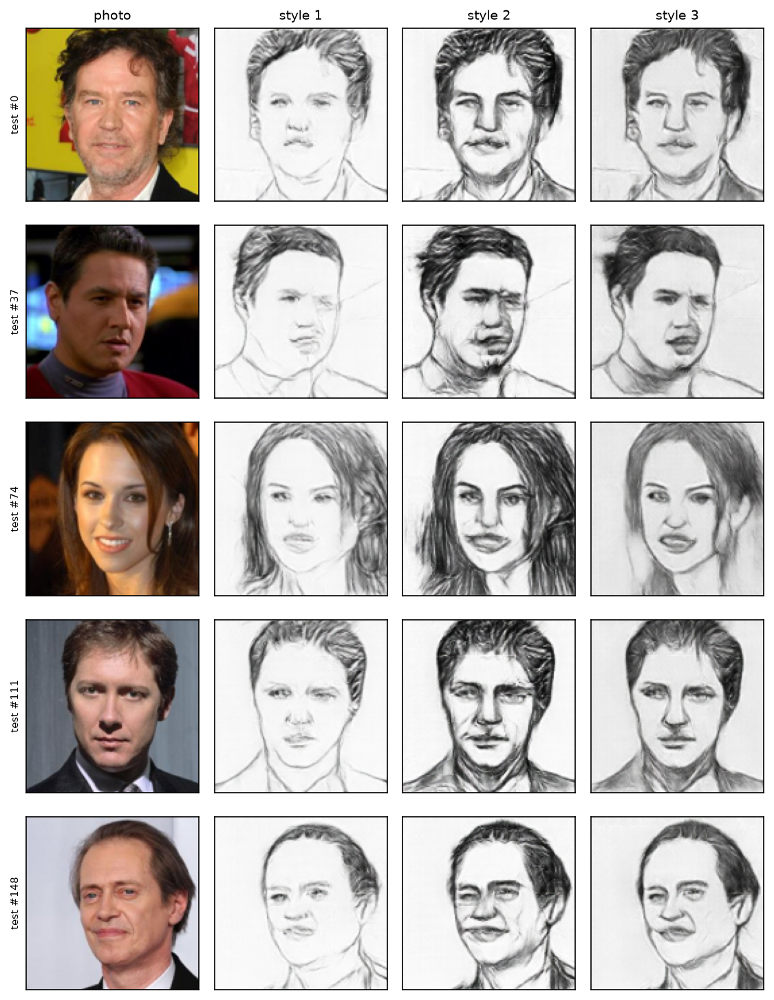
report/figures/task4_cgan_style_swap.png
What it shows: Five test photos, each drawn in Style 1, Style 2 and Style 3.
How to read it: Compare columns for the same row.
What it means: Same identity, pose and hair, but a visibly different drawing style: light outline, heavy shading, soft tone. The learned style embedding controls the output.
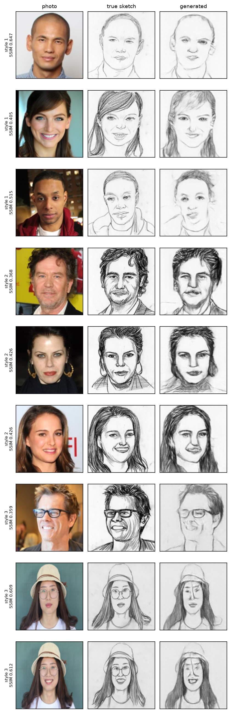
report/figures/task4_cgan_examples.png
What it shows: Photo, true sketch and generated sketch, three examples per style.
How to read it: Compare the last two columns.
What it means: The generator reproduces structure and style; stroke details differ from the artist's.
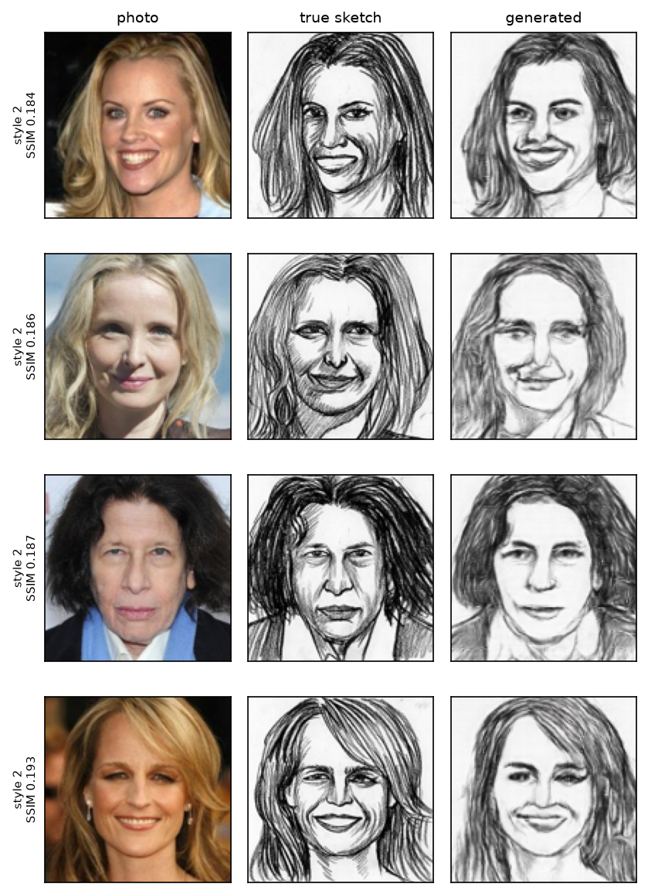
report/figures/task4_cgan_failures.png
What it shows: The four test pairs with the lowest SSIM (all Style 2).
How to read it: Compare true and generated sketches.
What it means: Recognisable and in the right style, but the artist's individual hair strokes sit elsewhere. These failures are partly a limit of pixel-wise metrics.
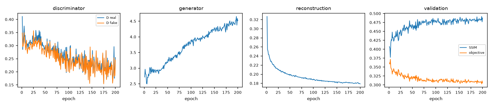
report/figures/task4_cgan_curves.png
What it shows: Discriminator real and fake loss, generator adversarial loss, generator L1, validation SSIM and objective per epoch.
How to read it: Healthy GAN training: the losses oscillate but do not blow up.
What it means: The discriminator slowly gains the upper hand (normal), nothing collapsed, and validation SSIM was still creeping up at epoch 100.
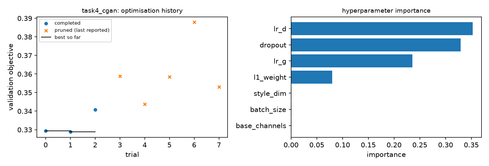
report/figures/task4_cgan_optuna.png
What it shows: Trial scores and importances.
How to read it: Lower is better.
What it means: 8 trials, 3 completed, 5 pruned; the balance between the two learning rates and dropout matter most.
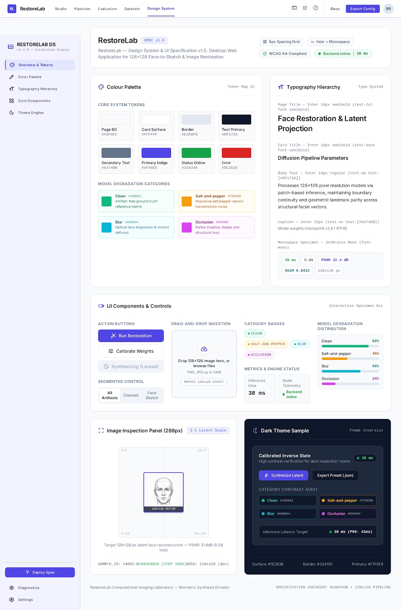
report/figures/stitch/00_design_system.png
What it shows: The style guide generated in Stitch.
How to read it: Colours, type, components.
What it means: Evidence that the design started in Stitch.
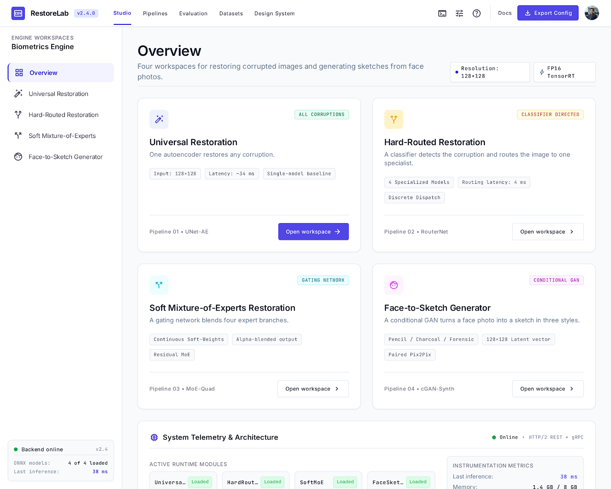
report/figures/stitch/01_overview.png
What it shows: The landing page with four workspace cards.
report/figures/stitch/02_universal_restoration.png
What it shows: Input panel and result panel.
report/figures/stitch/03_hard_routed_restoration.png
What it shows: Classifier probabilities and chosen expert.
report/figures/stitch/04_soft_moe_restoration.png
What it shows: Routing weights and contribution bar.
report/figures/stitch/05_face_to_sketch.png
What it shows: Upload, style choice, side-by-side result.
report/figures/stitch/06_face_to_sketch_webcam.png
What it shows: Live preview and capture.
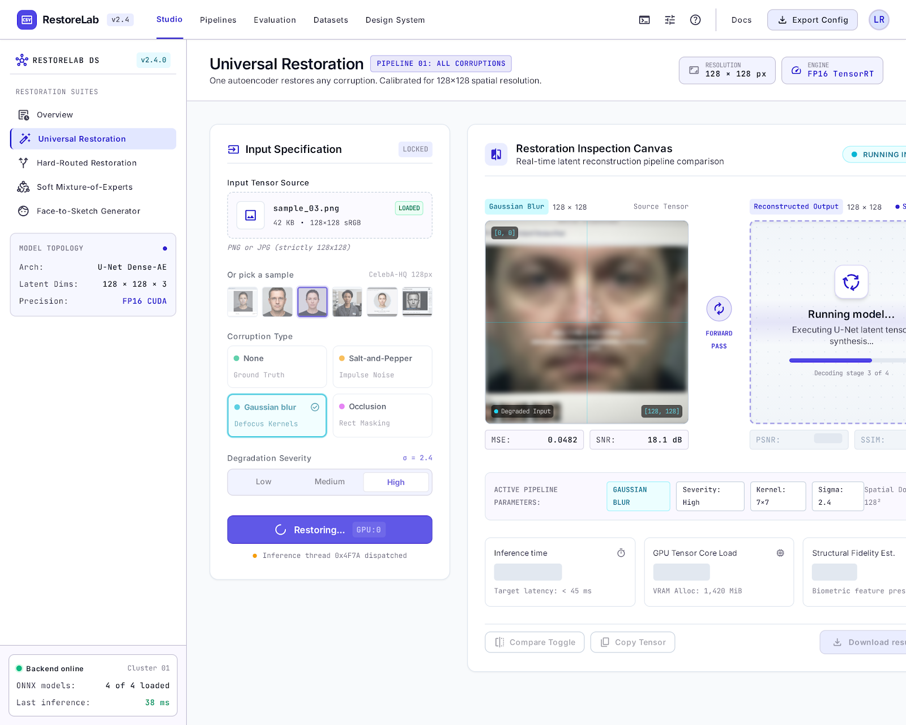
report/figures/stitch/07_loading_state.png
What it shows: Spinner and disabled controls while the model runs.
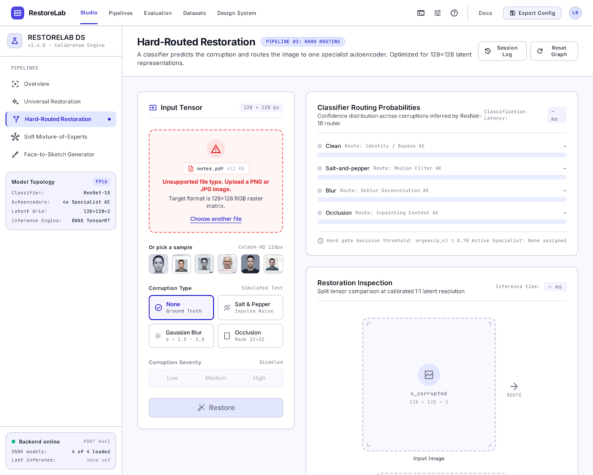
report/figures/stitch/08_error_state.png
What it shows: Unsupported file message and empty results.